TutorialCantileverBeam: Model Definition and Uncertainty Quantification
This script runs the Cantilever Beam Tutorial in OpenCOSSAN. The documentation and the problem description of this example is available at: http://cossan.co.uk/wiki/index.php/Cantilever_Beam

Author: Edoardo Patelli, Institute for Risk and Uncertainty, University of Liverpool, UK
Contents
- LICENSE
- Setup
- Definition of the Input: Parameters
- Definition of the Input: Random Variables
- Definition of the Input: Function
- Definition of the Input: Random Variable Set
- Definition of the Input: Input
- Definition of the Evaluator
- Definition of the Physical Model
- Deterministic Analysis
- Uncertainty Quantification
- Results
- Cleanup
- Next Tutorials
LICENSE
%{ This file is part of OpenCossan <https://cossan.co.uk>. Copyright (C) 2006-2018 COSSAN WORKING GROUP OpenCossan is free software: you can redistribute it and/or modify it under the terms of the GNU General Public License as published by the Free Software Foundation, either version 3 of the License or, (at your option) any later version. OpenCossan is distributed in the hope that it will be useful, but WITHOUT ANY WARRANTY; without even the implied warranty of MERCHANTABILITY or FITNESS FOR A PARTICULAR PURPOSE. See the GNU General Public License for more details. You should have received a copy of the GNU General Public License along with OpenCossan. If not, see <http://www.gnu.org/licenses/>. %}
Setup
Reset the random number generator in order to always obtain the same results. DO NOT CHANGE THE VALUES OF THE SEED!
OpenCossan.resetRandomNumberGenerator(51125); % Set the verbosity level to 2 in order to silence evaluator output % messages. OpenCossan.setVerbosityLevel(2);
Definition of the Input: Parameters
Construct the Parameter objects according to the problem definition:
- Length of the beam L = 1.8m.
- Width of the beam b = 0.12m.
- Maximum allowed displacement maxDisplacement = 0.01m.
L = Parameter('value',1.8,'Sdescription','Beam Length'); b = Parameter('value',0.12,'Sdescription','Beam Width'); maxDisplacement = Parameter('value',0.010,'Sdescription','Maximum allowed Displacement');
Definition of the Input: Random Variables
Construct the RandomVariable objects according to the problem definition:
- Load P: Log-normal distributed with mean 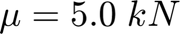 and standard deviation 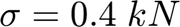.
- Height h: Normal distributed with mean 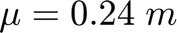 and standard deviation 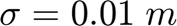.
- Density 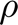: Log-normal distributed with mean 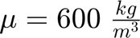 and standard deviation 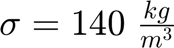.
- Young's Modulus E: Log-normal distributed with mean 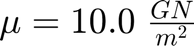 and standard deviation of 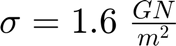.
P = RandomVariable('Sdistribution','lognormal','mean',5000,'std',400,'Sdescription','Load'); h = RandomVariable('Sdistribution','normal','mean',0.24,'std',0.01,'Sdescription','Beam Heigth'); rho = RandomVariable('Sdistribution','lognormal','mean',600,'std',140,'Sdescription','Density'); E = RandomVariable('Sdistribution','lognormal','mean',10e9,'std',1.6e9,'Sdescription','Young''s modulus');
Definition of the Input: Function
Construct the Function object that defines the moment of inertia as
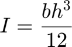
I = Function('Sdescription','Moment of Inertia','Sexpression','<&b&>.*<&h&>.^3/12');
Definition of the Input: Random Variable Set
Construct the RandomVariableSet, the set of all RandomVariables, with a linear correlation of 0.8 between and E.
Mcorrelation = eye(4); Mcorrelation(3,4) = 0.8; % Add correlation between rho and E Mcorrelation(4,3) = 0.8; % Add correlation between rho and E Xrvset = RandomVariableSet('CXrandomVariables',{P h rho E},'CSmembers',{'P' 'h' 'rho' 'E'},'Mcorrelation',Mcorrelation);
Definition of the Input: Input
Construct the Input object grouping the input objects together.
Xinput = Input('CXmembers',{L b Xrvset I maxDisplacement},'CSmembers',{'L' 'b' 'Xrvset' 'I' 'maxDisplacement'}); % The summary show that Xinput contains all the previously created % objects: display(Xinput);
Input Object - Description: * 1 Sets of RandomVariables ** Names: "Xrvset" * 3 Parameter object(s) ** Names: "L" "b" "maxDisplacement" * 1 Functions object(s) ** Names: "I"
Definition of the Evaluator
Construct the Evaluator object by passing an Mio (MATLAB-Input-Output) object. The Mio is used to calculate the displacement
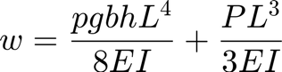$,
using the previously defined objects.
Sfolder = fileparts(which('TutorialCantileverBeamMatlab.m'));% returns the current folder Xmio = Mio('Spath',fullfile(Sfolder,'MatlabModel'),'Sfile','tipDisplacement.m',... 'Cinputnames',{'I' 'b' 'L' 'h' 'rho' 'P' 'E'}, ... 'Coutputnames',{'w'},'Liostructure',true); % Create the Evaluator using the Mio Xevaluator = Evaluator('CXmembers',{Xmio},'CSmembers',{'Xmio'});
Definition of the Physical Model
Construct the Model by passing the Input and the Evaluator
XmodelBeamMatlab = Model('Xinput',Xinput,'Xevaluator',Xevaluator);
Deterministic Analysis
Xout = XmodelBeamMatlab.deterministicAnalysis; NominalDisplacement = Xout.getValues('Sname','w'); % Validate against the reference solution assert(abs(NominalDisplacement-7.1922e-03)<1e-6,... 'CossanX:Tutorials:CantileverBeamMatlab', ... 'Nominal sulution does not match Reference Solution.')
Uncertainty Quantification
Define simulation method as Monte Carlo using 1000 samples
Xmc = MonteCarlo('Nsamples',1000); % Run the analysis XsimOutMC = Xmc.apply(XmodelBeamMatlab);
Results
Show the histogram of the beam tip displacement
Vw = XsimOutMC.getValues('Sname','w'); f1 = figure; histogram(Vw,50);

Cleanup
close(f1)
Next Tutorials
- Cantilever Beam Optimization: TutorialCantileverBeamMatlabOptimization.html
- Cantilever Beam Reliability Analysis: TutorialCantileverBeamMatlabReliabilityAnalysis.html
- Cantilever Beam Reliability Based Optimization: TutorialCantileverBeamMatlabRBO.html